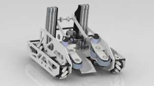

Our boxtube drivetrain allows for efficient interchangeability, mostly due to its sleeker design which combats traditional c-channels. In order to account for the 18”x18” constraint. The custom boxtube drivetrain creates more space for the intake, control and rev hubs, as well as a wobble goal mechanisms.
Treaded 6 wheel tank drive Simple direct driven middle and back wheels belted together with the front free spinning omni wheels providing lightning-fast acceleration Large pulleys to allow belts to contact the barrier so that the robot never gets stuck Front and back omni-wheels to allow for fast turning and maneuverability through the barriers
Treaded 6 wheel tank drive Simple direct driven middle and back wheels belted together with the front free spinning omni wheels providing lightning-fast acceleration Large pulleys to allow belts to contact the barrier so that the robot never gets stuck Front and back omni-wheels to allow for fast turning and maneuverability through the barriers
The current version of our robot is built around a custom 6-wheel treaded tank aluminum box-tube drivetrain that allows us to quickly move around the field—between and over the barrier—to cycle and play defense. The big pulleys allow the belts to act as treads when going over the barriers. A single stage intake consisting of surgical tubing quickly intakes freight and transfers it to the gripper. The gripper automatically closes using a color sensor to prevent the freight from escaping; with the click of a button, the gripper passes through the robot to the needed scoring position through the use of our double axis 2 degrees of freedom arm, which alongside our gripper, allows us to cap our TSE. A motor connected to a compliant gecko wheel is attached to the upright box tube to spin the duck carousel. With a simple arm 2 DOF, the robot is both able to cycle the shared and team shipping hubs, as well as play defense when needed with its6-wheel tank drive and the ability to overpower mecanum drivetrains.